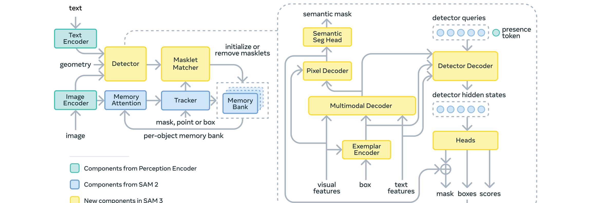

Samples
253
RWTD validation set
Comparing 7 approaches for texture boundary detection on the Real-World Texture Dataset (RWTD) — 253 samples. Text descriptions generated by Qwen3-VL-8B, masks produced by SAM 3's DETR proposals and Semantic Segmentation Head.
The Semantic Segmentation Head with Qwen3-VL descriptions achieves 92.9% mIoU — surpassing all other approaches by a wide margin. This pixel-level dense prediction with Winner-Takes-All assignment outperforms the DETR proposal approach (83.4%) by +9.5 points, and the generic baseline (70.6%) by +22.3 points.
All approaches use SAM 3 in zero-shot mode (no fine-tuning). Qwen3-VL-8B generates texture descriptions with 100% parse success rate across all 253 samples.
SAM 3 extends SAM 2 with a text-guided detection pipeline. We compare two mask output pathways: the Detector Decoder (~200 proposal masks ranked by confidence) vs the Semantic Seg Head (dense pixel-level prediction from the Pixel Decoder).

All approaches evaluated on 253 RWTD samples. Deltas computed vs Generic baseline. Green = improvement, Red = degradation.
| Approach | Type | mIoU | mARI | Δ mIoU | Δ mARI |
|---|---|---|---|---|---|
| Generic ZS prompt: "texture" |
Baseline | 0.706 | 0.688 | — | — |
| Oracle Text GT descriptions |
Oracle | 0.742 | 0.741 | +0.036 | +0.053 |
| Points Only GT points + generic DETR |
Oracle | 0.686 | 0.642 | -0.020 | -0.046 |
| Oracle Text + Points GT descriptions + GT points |
Oracle | 0.811 | 0.757 | +0.105 | +0.069 |
| Qw3 Proposal Qwen3 text → DETR top-1 |
Auto | 0.834 | 0.785 | +0.128 | +0.097 |
| Qw3 SemSeg Qwen3 text → Sem Seg Head (WTA) |
Auto / Best | 0.929 | 0.879 | +0.223 | +0.191 |
| Qw3+CLIPSeg Qwen3 text + CLIPSeg points |
Auto | 0.843 | 0.776 | +0.137 | +0.088 |
Each approach varies in how text descriptions and point prompts are provided to SAM 3.
SAM 3 with generic prompt "texture". Top-2 DETR proposals as the two texture masks. No image-specific information.
Ground-truth texture descriptions from the dataset. Top-1 DETR proposal per description.
GT descriptions + GT point prompts. DETR masks refined by SAM 3 tracker with oracle points.
Qwen3-VL-8B generates descriptions. Top-1 DETR proposal mask per description. Fully automated.
Same Qwen3 descriptions, but uses the Semantic Seg Head instead of DETR proposals. Winner-Takes-All pixel assignment. 92.9% mIoU.
Qwen3 descriptions + CLIPSeg-generated point prompts and binary masks, refined by tracker.
Click any sample to expand the full comparison showing overlay + masks for each approach.